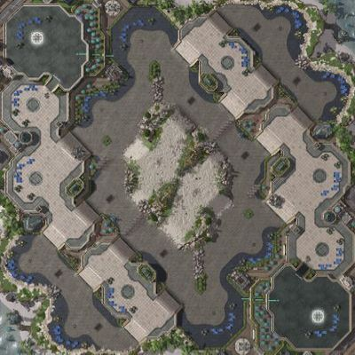
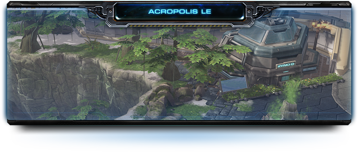

简介
对于像星际争霸2这样的RTS游戏来说，除了单位，地图也很容易成为游戏平衡的最重要特征，有时甚至比单位后面的数值更重要。
“星际争霸2”1v1模式下天梯地图共有7张，每张地图都各有特色。7张地图由系统随机分配其中的1张给一组对战的玩家。玩家至多可以禁用掉其中的3张，来使自己遇到被禁用的地图的概率大大降低。
星际争霸2的天梯地图在每一个赛季进行一次更新。用几张全新的地图替换掉上个赛季天梯地图中的某几张，然后保留余下的，一起作为新赛季的天梯地图。
最新1v1天梯地图介绍
滨海卫城

| 地图名称： | 滨海卫城 |
| 地图介绍： | 滨海卫城是一张注重宏观控制的小型地图。这张地图上垂直分布的三基地扩张点很容易获取和进行防守。地图的中央区域非常适合早期的直接对抗，而摧毁岩石则可以开创更多进攻路线。 |
